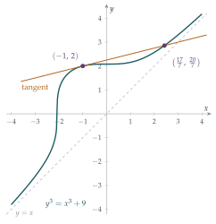

A curve has the equation \[y^3 = x^3 + a^3 + b^3,\] where \(a\) and \(b\) are positive constants. Show that the tangent to the curve at the point \((-a, b)\) is \[b^2 y - a^2 x = a^3 + b^3.\] In the case \(a = 1\) and \(b = 2\), show that the \(x\)-coordinates of the points where the tangent meets the curve satisfy \[7x^3 - 3x^2 - 27x - 17 = 0.\] Hence find positive integers \(p\), \(q\), \(r\) and \(s\) such that \[p^3 = q^3 + r^3 + s^3.\]
The hook
This looks like a routine coordinate-geometry question: differentiate, find a tangent, solve a cubic. Then the last line asks for a cube that is the sum of three other cubes, and the geometry produces one as if by magic.
The trick, drawing a line through a known point on a curve to find a new point, goes back to Diophantus of Alexandria in the third century. In modern hands it became the theory of elliptic curves, which sits at the centre of present-day number theory, underlies the proof of Fermat’s Last Theorem, and secures a large share of the world’s internet traffic.
Before you start
The point \((-a, b)\) is on the curve. Why? And what does that have to do with sums of cubes?
Substitute: \((-a)^3 + a^3 + b^3 = b^3\), so yes. Points on \(y^3 = x^3 + a^3 + b^3\) with rational coordinates are exactly what we want: if \(x = q/s'\) and \(y = p/s'\) then clearing denominators gives a relation between cubes. The plan is to start from one easy point and use the geometry to find a less obvious one.
Working it through
Stage 1 The tangent
Differentiate \(y^3 = x^3 + a^3 + b^3\) implicitly: \(3y^2 \dfrac{dy}{dx} = 3x^2\), so \(\dfrac{dy}{dx} = \dfrac{x^2}{y^2}\). At \((-a, b)\) the gradient is \(a^2/b^2\), so the tangent is \[y - b = \frac{a^2}{b^2}(x + a) \quad\Longrightarrow\quad b^2 y - b^3 = a^2 x + a^3 \quad\Longrightarrow\quad b^2 y - a^2 x = a^3 + b^3. \qed\]
Stage 2 Where the tangent meets the curve again
With \(a = 1\), \(b = 2\) the curve is \(y^3 = x^3 + 9\) and the tangent at \((-1, 2)\) is \(4y - x = 9\), that is, \(y = \dfrac{x + 9}{4}\). Substitute into the curve: \[\frac{(x+9)^3}{64} = x^3 + 9 \quad\Longrightarrow\quad x^3 + 27x^2 + 243x + 729 = 64x^3 + 576,\] which rearranges to \(63x^3 - 27x^2 - 243x - 153 = 0\), and dividing by \(9\) gives \(7x^3 - 3x^2 - 27x - 17 = 0\).■
Stage 3 Solving the cubic
You already know one root of this cubic without doing any algebra. Which one, and why should it appear twice?
The tangent touches the curve at \(x = -1\) (Figure 1.9.1), and “touching” means a repeated root, just as a tangent to a parabola meets it at a double root of a quadratic. So \((x + 1)^2\) should be a factor. Check: \(7(-1)^3 - 3(1) - 27(-1) - 17 = -7 - 3 + 27 - 17 = 0\), and the derivative \(21x^2 - 6x - 27\) also vanishes at \(x = -1\). Dividing, \[7x^3 - 3x^2 - 27x - 17 = (x+1)^2 (7x - 17).\]
So the tangent meets the curve again where \(x = \frac{17}{7}\). Find \(y\), and turn the point into a relation between cubes.
\(y = \dfrac{17/7 + 9}{4} = \dfrac{80/7}{4} = \dfrac{20}{7}\). The point \(\bigl(\frac{17}{7}, \frac{20}{7}\bigr)\) lies on \(y^3 = x^3 + 9\), so \[\frac{20^3}{7^3} = \frac{17^3}{7^3} + 9 \quad\Longrightarrow\quad 20^3 = 17^3 + 9 \times 7^3.\]
We want \(9 \times 7^3\) to be a sum of two cubes. Remember where the \(9\) came from.
\(9 = a^3 + b^3 = 1^3 + 2^3\), so \(9 \times 7^3 = 7^3 + 14^3\). Therefore \[20^3 = 17^3 + 14^3 + 7^3.\] Check: \(8000 = 4913 + 2744 + 343\).■

Looking back
Tangency means a double root. That turned a cubic with no obvious roots into one we could factorise immediately.
The new root is rational for free. Once two of the three roots are rational (here both \(-1\)), the third must be too, because the sum of the roots, \(\frac{3}{7}\), is rational. This is the heart of the method.
Geometry produced arithmetic. We never searched for cubes; a tangent line found them.
What’s really going on
Take a cubic curve, such as \(y^3 = x^3 + 9\) or the more standard form \(y^2 = x^3 + Ax + B\). If you know two points on it with rational coordinates, the line through them meets the curve in exactly one more point, and that point also has rational coordinates (by the argument in Looking back). If you know only one point, use the tangent there instead. Either way, old rational points produce new ones.
Remarkably, this “chord–tangent” construction can be made into a way of adding points on the curve, and the rational points then form a group, an algebraic structure you will study in your first year. Louis Mordell proved in 1922 that this group is generated by finitely many points: all the rational points, however many there are, can be built from a finite set using chords and tangents. His proof is a version of Fermat’s descent from Section 1.5.
Elliptic curves today
Curves like these are called elliptic curves (not because they are ellipses, but because of a historical link with the arc length of an ellipse). They are everywhere in modern mathematics.
Fermat’s Last Theorem. In the 1980s Gerhard Frey noticed that a solution of \(x^n + y^n = z^n\) would produce a very strange elliptic curve. Andrew Wiles proved in 1994 that such strange curves can’t exist, and so proved Fermat’s Last Theorem.
The Birch and Swinnerton-Dyer conjecture. How many generators does the group of rational points need? A conjecture made in the 1960s, using some of the earliest computer experiments in mathematics at Cambridge, predicts the answer in terms of a function built from counting points modulo primes. It is one of the seven Millennium Prize Problems.
Cryptography. On an elliptic curve over a finite number system, adding a point \(P\) to itself \(n\) times is quick, even when \(n\) has hundreds of digits (double \(P\) repeatedly, much as you would calculate a high power by repeated squaring). But given \(P\) and the result \(nP\), finding \(n\) seems to be extremely hard: this is the elliptic-curve discrete logarithm problem. That asymmetry protects much of today’s online communication.
Sums of like powers
The smallest cube that is a sum of three positive cubes is \(6^3 = 3^3 + 4^3 + 5^3\); the tangent method found \(20^3 = 7^3 + 14^3 + 17^3\), which is not a multiple of it, and repeating the method keeps producing new identities (although some involve negative numbers). How many \(k\)th powers does it take to make another \(k\)th power? Euler conjectured in 1769 that you need at least \(k\) \(k\)th powers to make another \(k\)th power. For fourth and fifth powers he was wrong: in 1966 Leon Lander and Thomas Parkin found \[27^5 + 84^5 + 110^5 + 133^5 = 144^5\] by computer search, and in 1988 Noam Elkies used elliptic curves to find counterexamples for fourth powers.
The thinking skill
To find whole-number or rational solutions of an equation, think of it as a curve and look for lines through known points.
The algebra behind it is simple: if a polynomial with rational coefficients has all but one of its roots rational, the last root is rational too. Translating between pictures and equations in this way is one of the most powerful habits a mathematician can have.
Try this next
Rational points on a circle. The line through \((-1, 0)\) with gradient \(t\) meets the circle \(x^2 + y^2 = 1\) again. Show that the other point is \(\left(\dfrac{1 - t^2}{1 + t^2}, \dfrac{2t}{1 + t^2}\right)\), and use this to produce infinitely many Pythagorean triples.
A chord that misses. The points \((1, 2)\) and \((2, 1)\) lie on \(x^3 + y^3 = 9\). Show that the line through them meets the curve in no other point. Where has the “third point” gone? (Look up the point at infinity.)
Repeat the trick. Find the tangent to \(y^3 = x^3 + 9\) at \(\bigl(\frac{17}{7}, \frac{20}{7}\bigr)\) and the third point where it meets the curve. (A computer algebra system helps; notice how quickly the numbers grow.)
Taxicab numbers. \(1729 = 1^3 + 12^3 = 9^3 + 10^3\). Find the third point where the line through \((1, 12)\) and \((9, 10)\) meets the curve \(x^3 + y^3 = 1729\), and deduce a new identity of the form \(p^3 = q^3 + r^3 + s^3\).
Further reading
Joseph Silverman & John Tate, Rational Points on Elliptic Curves (Springer). Written for undergraduates; Chapter 1 needs nothing beyond A-level.
Avner Ash & Robert Gross, Elliptic Tales (Princeton University Press). A popular account leading up to the Birch and Swinnerton-Dyer conjecture.
Simon Singh, Fermat’s Last Theorem. How elliptic curves came to solve a 350-year-old problem.